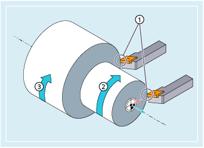

If the "Constant cutting speed" function is active, the spindle speed is modified as a function of the respective workpiece diameter so that the cutting speed S in m/min or ft/min remains constant at the tool edge.
① | Constant cutting rate |
② | Increased spindle speed |
③ | Reduced spindle speed |
This results in the following advantages:
Uniformity and consequently improved surface quality of turned parts
Machining with less wear on tools
| G96/G961/G962 S... | |
| ... | |
| G97/G971/G972/G973 |
| Note |
SCC[<Ax>] can be programmed separately or together with G96/G961/G962. |
| Revolutional feedrate (as for G95) and constant cutting speed If G95 has not been activated previously, a new feedrate value F... has to be specified when G96 is called. | |
| Linear feedrate (as for G94) and constant cutting speed | |
| Linear feedrate or revolutional feedrate and constant cutting speed | |
| In conjunction with G96, G961 or G962, S... is not interpreted as a spindle speed but rather as a cutting speed. The cutting speed is always applied to the master spindle. | |
Unit: | m/min (for G71/G710) or ft/min (for G70/G700) | |
Range of values: | 0.1 m/min to 9999 9999.9 m/min | |
| Revolutional feedrate and constant spindle speed (constant cutting speed OFF) | |
| Linear feedrate and constant spindle speed (constant cutting speed OFF) | |
| Linear feedrate or revolutional feedrate and constant spindle speed (constant cutting speed OFF) | |
| Revolutional feedrate without spindle speed limitation and constant spindle speed (G97 without LIMS for ISO mode) | |
Note: | ||
| Speed limiting for the master spindle (only active if G96/G961/962/G97 active) On machines with selectable master spindles, limitations of differing values can be programmed for up to four spindles within one block. | |
| Number of spindle | |
| Spindle speed upper limit in r/min | |
| If any of the G96/G961/G962 functions are active, SCC[<Ax>] can be used to assign any geometry axis as reference axis. | |
| Note |
If G96/G961/G962 is selected for the first time, a constant cutting speed S... must be entered; if G96/G961/G962 is selected again, the entry is optional. |
| Note |
The speed limitation programmed with LIMS must not exceed the speed limit programmed with G26 or defined in the setting data. |
| Note |
If, when changing from G96/G961/G962 to G94/G95 a new spindle speed S... is not programmed, then the last active spindle speed remains effective. |
| Note |
The reference axis for G96/G961/G962 must be a geometry axis assigned to the channel at the time when SCC[<axis>] is programmed. SCC[<axis>] can also be programmed when any of the G96/G961/G962 functions are active. |
Example 1: Activating the constant cutting speed with speed limitation
| Program code | Comment |
|---|---|
| N10 SETMS (3) | |
| N20 G96 S100 LIMS=2500 | ; Constant cutting speed = 100 m/min, max. speed = 2500 rpm |
| ... | |
| N60 G96 G90 X0 Z10 F8 S100 LIMS=444 | ; Max. speed = 444 rpm |
Example 2: Defining speed limitation for four spindles
Speed limitations are defined for spindle 1 (master spindle) and spindles 2, 3, and 4:
| Program code | |
|---|---|
| N10 LIMS=300 LIMS[2]=450 LIMS[3]=800 LIMS[4]=1500 | |
| ... | |
Example 3: Y-axis assignment for face cutting with X axis
| Program code | Comment |
|---|---|
| N10 G18 LIMS=3000 T1 D1 | ; Speed limitation at 3000 rpm |
| N20 G0 X100 Z200 | |
| N30 Z100 | |
| N40 G96 S20 M3 | ; Constant cutting speed = 20 m/min, spindle speed is dependent on the X axis. |
| N50 G0 X80 | |
| N60 G1 F1.2 X34 | ; Face cutting in X at 1.2 mm/revolution. |
| N70 G0 G94 X100 | |
| N80 Z80 | |
| N100 T2 D1 | |
| N110 G96 S40 SCC[Y] | ; Y axis is assigned to G96 and G96 is activated (can be achieved in a single block). Constant cutting speed = 40 m/min, is dependent upon X axis. |
| ... | |
| N140 Y30 | |
| N150 G01 F1.2 Y=27 | ; Plunge-cutting in Y, feedrate F = 1.2 mm/revolution. |
| N160 G97 | ; Constant cutting speed off. |
| N170 G0 Y100 |
| Program code | Comment |
|---|---|
| ... | |
| N30 LIMS=2000 | ; Speed limiting (2000 r/min) |
| N40 G96 S200 M3 | ; Selects constant cutting speed (200 m/min) |
| N50 G90 T1 D1 M8 | |
| N60 G0 G42 X200 Z1 | |
| N70 G1 X200 Z0 F0.25 | |
| N80 Z-15 | ; For diameter X200, the spindle rotates with 318 r/min. |
| N90 G95 X150 Z-30 | ; Selects revolutional feed rate. As a spindle speed is not programmed in the G95 block, the last active spindle speed (318 r/min) is active. |
| N100 G96 X100 Z-50 | ; Reselects constant cutting speed (200 m/min). The spindle speed increases with decreasing diameter X. |
| N110 X30 Z-70 | ; From X31.9, the spindle rotates with 2000 r/min and is limited to 2000 r/min by LIMS. |
| N120 G95 X40 Z-90 F0.05 | ; Selects revolutional feed rate. As a spindle speed is not programmed in the G95 block, the last active spindle speed (2000 r/min) is effective. |
| ... | |
| N160 G95 S1500 X50 Z-100 | ; Selects revolutional feed rate. The spindle speed (1500 r/min) programmed in the G95 block becomes active. |
| ... |
See also:
Constant cutting rate (G96/G961/G962, G97/G971/G972, G973, LIMS, SCC): Further information